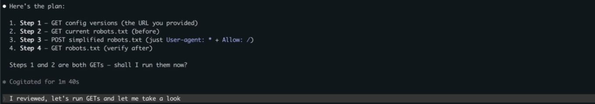
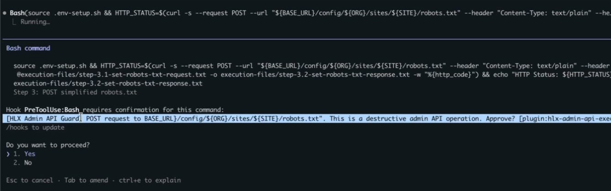
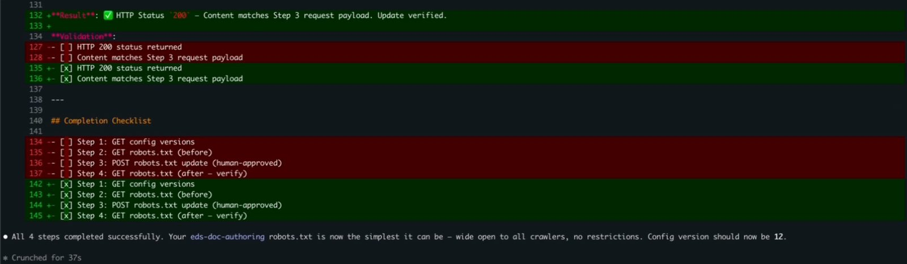
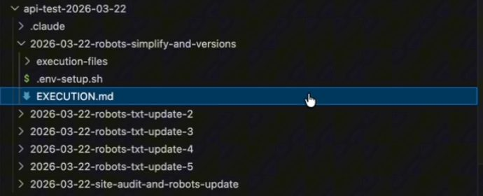
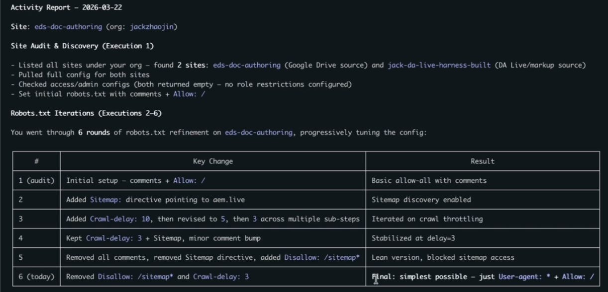

I'll walk through it the way the video does: the demo first, then the three things I like about it, then how to get it.
First published as a LinkedIn video on March 23, 2026. Rewritten for this site in October 2026. Code: ai-builder-kit at cfb0f59, the commit before I recorded.
Since March, the kit grew and the skill stayed the same
The skill and the guard hook haven't changed in the repo since that night. What grew is the kit around them: AI Builder Kit is now a marketplace of nine published skills. Two months later I also spent a weekend with Adobe's own Edge Delivery skills, which I wrote up in a hands-on review.
The Admin API is part of every EDS flavor
If you've been doing EDS for some time, you'll need to configure the Admin API. It's part of all three offerings: sites authored in Word or Google Docs, Universal Editor, and the newer da.live. Robots.txt, site config, access, versions: it all goes through admin.hlx.page, documented in the Admin API reference.
The usual tools are Postman, the editors on tools.aem.live, or a CLI. I wanted to do it more agentically, with the AI doing the research, planning and execution while I stay in the driver's seat and review every step.
Watch this part0:00 The Admin API
The agent writes a plan and runs the GETs first
I started a new Claude Code session, at 0% context, and asked for something very generic: update my robots.txt to simply accept everything, keep it simple, and do the GET-SET-GET. To make sure it picked up the right skill, I named it, the Helix 5 admin skill, and pasted in the org and the site. It loaded the skill, did its research and came back with a plan before touching anything:

The skill understands the API well, and it almost always enforces a GET-SET-GET pattern, so we're not setting things without getting them first. That's what I consider best practice anyway: always get the latest before you touch anything, in case a teammate changed it. Here's the rule as the skill states it:
## GET/SET/GET PatternFor every modification, execute in sequence, one step at a time:1. **GET before** - Capture current state, wait for user2. **SET** - Apply the change, wait for user3. **GET after** - Verify persistence, wait for user**Never execute multiple steps without user confirmation between them.**The GETs came back with the current config version and the current robots.txt: User-agent: *, Allow: /, a Disallow: /sitemap* and a Crawl-delay: 3. The change would remove the last two.
Watch this part1:05 The demo starts2:11 GET-SET-GET2:34 The plan3:08 Running the GETs
Reviewing the POST before it runs
Before the POST, the AI tells me exactly what it's about to do, in a fixed format: why, what changes from before to after, and how. It shows the endpoint, the file the payload was saved to, and the exact curl command it will run:

This is important. It's a moment to take a breather. Even though the AI prepares all of this for you, you're still responsible for checking it. Me as the architect or engineer working on this, I look at the two-line change before it executes, and only then do I say yes.
Watch this part4:00 The change review
A hook that stops the POST, even in bypass mode
The skill takes us this far: a plan, the GETs, a review. The plugin adds a Claude Code hook that stops the session before the write. It's a pre-tool-call hook: I'm about to call the Bash tool to run a curl request, it happens to have a POST in there, so the hook fires and Claude Code asks me to confirm.

That's really good if you're kind of paranoid like I am. I was running with bypass permissions on, and this still stopped Claude Code. It matters most when you've done something a bunch of times in lower environments, you're comfortable with it, and now you're doing it on production. It's always good to take a pause, and to make sure the pause isn't only an agentic pause but a deterministic one. With agentic systems, more layers like that can be better.
The hook is two small files. hooks.json registers a script to run before every Bash tool call:
{ "description": "Guards destructive AEM Admin API operations (POST/PUT/DELETE/PATCH to admin.hlx.page)", "hooks": { "PreToolUse": [ { "matcher": "Bash", "hooks": [ { "type": "command", "command": "bash ${CLAUDE_PLUGIN_ROOT}/hooks/guard-admin-api.sh", "timeout": 5 } ] } ] }}The script reads the command Claude Code is about to run and asks three questions in a row. Is it curl? Is there a write method after --request or -X? Is it aimed at admin.hlx.page or ${BASE_URL}? Three yeses and it answers ask, which puts the prompt in front of you. Anything else exits 0 with no output, and the command runs.
#!/usr/bin/env bash# guard-admin-api.sh# PreToolUse hook: guards curl POST/PUT/DELETE/PATCH to admin.hlx.page# Returns "ask" decision so Claude Code prompts user for yes/no approval.## Fails open: if parsing fails, the command is allowed through.set -euo pipefailCOMMAND=$(jq -r '.tool_input.command // ""')# If extraction failed, allow (fail-open)if [ -z "$COMMAND" ]; then exit 0fi# Check for destructive curl targeting admin.hlx.page or ${BASE_URL}IS_DESTRUCTIVE=falseif echo "$COMMAND" | grep -qiE 'curl\b'; then if echo "$COMMAND" | grep -qiE '(--request|-X)\s+(POST|PUT|DELETE|PATCH)'; then if echo "$COMMAND" | grep -qiE '(admin\.hlx\.page|\$\{?BASE_URL\}?)'; then IS_DESTRUCTIVE=true fi fifiif [ "$IS_DESTRUCTIVE" = true ]; then METHOD=$(echo "$COMMAND" | grep -oiE '(--request|-X)\s+(POST|PUT|DELETE|PATCH)' | head -1 | awk '{print toupper($NF)}') URL_TARGET=$(echo "$COMMAND" | grep -oiE '(admin\.hlx\.page|BASE_URL)[^ ]*' | head -1) jq -n \ --arg method "$METHOD" \ --arg target "${URL_TARGET:-admin.hlx.page}" \ '{ hookSpecificOutput: { hookEventName: "PreToolUse", permissionDecision: "ask", permissionDecisionReason: ("[HLX Admin API Guard] " + $method + " request to " + $target + ". This is a destructive admin API operation. Approve?") } }' exit 0fiThose three checks are regular expressions, so they decide what gets stopped. Below, pick a command (or edit one) to see which checks it passes and whether Claude Code would stop for approval. The first two are from the demo. The last two still write to the Admin API, and the hook lets them through, which is why I call it a guardrail for the skill's own commands and not a security boundary.
- 1Is it curl?
grep -qiE 'curl\b' - 2A write method after
--requestor-X?POST, PUT, DELETE or PATCH, any case - 3Aimed at the Admin API?
admin.hlx.pageor${BASE_URL}
The POST from my demo matches all three checks, so the hook answers ask and Claude Code stops for approval. Of the other presets, the GET and the POST to da.live are allowed by design, while -XPOST and --data with no method are writes to the Admin API that the hook lets through.
jq and gets the same answer.The hook matches the way the skill writes commands. The skill's conventions say to always spell out --request METHOD, so every write the skill makes gets caught. A command written another way, like -XPOST with no space, or --data with no method at all, which curl sends as a POST, goes straight through. The README says it plainly too: the hook fails open. Treat it as a guardrail for the skill's own commands.
Watch this part4:22 The hook stops the POST
Planning, no-judgment questions and a self-documenting record
Now that the demo's over, this thing really has three benefits for me.
First, it plans. Humans plan, and AI plans. It's good to always plan with someone, and AI is great for that. It researches the current state, drafts the change and waits for my approval. Having someone to plan with, even an AI, catches things you'd miss on your own.
Second, you can ask really basic questions, even dumb questions, and AI doesn't judge you.
Third, the whole process is self-documenting. Every session gets a dated folder with an EXECUTION.md and every request and response saved as a file, and the checklist gets ticked off as it goes:

Now imagine six sites with three environments each. That's 18 configurations to track. Who configured what, and when? Very confusing. With a tool like this, all your executions live in one place. This was just my local environment, certainly not a client thing, but picture a real client with three or four EDS sites and three or four environments each.

The last thing I demoed: say you need to give a KT session or a report. I asked it to look through everything I'd done in that folder and put together a summary. It read the execution folders and gave me an activity report: the two sites it found in my org, then six rounds of robots.txt changes and what each round changed.

That's a lot of manual work people don't generally want to do. Compared with Postman, or one-off windows across many environments, this keeps things organized without effort. On top of the research, the no-judgment questions and the safety, it's like having a buddy: it reviews your changes and you review its changes.
Watch this part5:30 It plans with you5:45 No judgment6:10 Self-documenting6:47 The report
Install the guarded plugin or copy the skill
It's open source in my AI Builder Kit repo, in two forms. For the full, guarded experience, install the plugin: add my repository as a marketplace in Claude Code, then install hlx-admin-api-executor-guarded from it. The README has both ways to add the marketplace; this is the settings one:
{ "extraKnownMarketplaces": { "ai-builder-kit": { "source": { "source": "git", "url": "https://github.com/jackzhaojin/ai-builder-kit.git" } } }}If you don't want the guarded experience, say you don't run with bypass permissions and you're happy with Claude Code's default prompts, you can just copy the skill folder into your skills. It works with Claude Code, Codex or GitHub Copilot, whatever you choose to use. The hook is the part that's specific to Claude Code.
Watch this part0:41 Plugin or skill8:08 Open source on GitHub
What works and the limits to know
The workflow does what I wanted: a plan before anything runs, a GET before every change, a review I have to read, a hard stop before every write, and a record of all of it I can turn into a report.
There are limits. The hook catches the commands the skill writes, not every possible write to the Admin API, and it fails open. I ran all of this against my own test site on my laptop, not a client program. And the review still depends on the human actually reading it.
Where I'd like this to go is more systems that are agentic on the other end, software an agent can interact with directly. My side is very agentic; there's nothing agentic on the other end yet. If you use this skill on a real program, let me know how it goes.